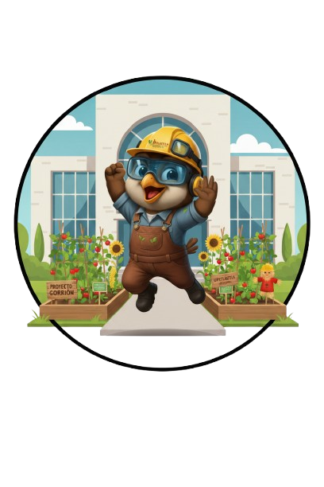

Atlautla
Universidad Politécnica de Atlautla

Atlautla es el municipio principal del Proyecto Gorrión por su riqueza natural y participación activa. Sus huertos académicos y comunitarios son un eje para la innovación social y la educación ambiental.
Te damos la bienvenida al huerto de la Universidad Politécnica de Atlautla. Aquí la naturaleza es nuestra maestra: nos enseña a valorar lo pequeño, a cuidar con responsabilidad y a disfrutar del crecimiento día a día. Este espacio verde no solo nos regala frutos, también nos invita a compartir, convivir y crecer como comunidad. Cada rincón de este huerto es una lección viva de respeto hacia la tierra.